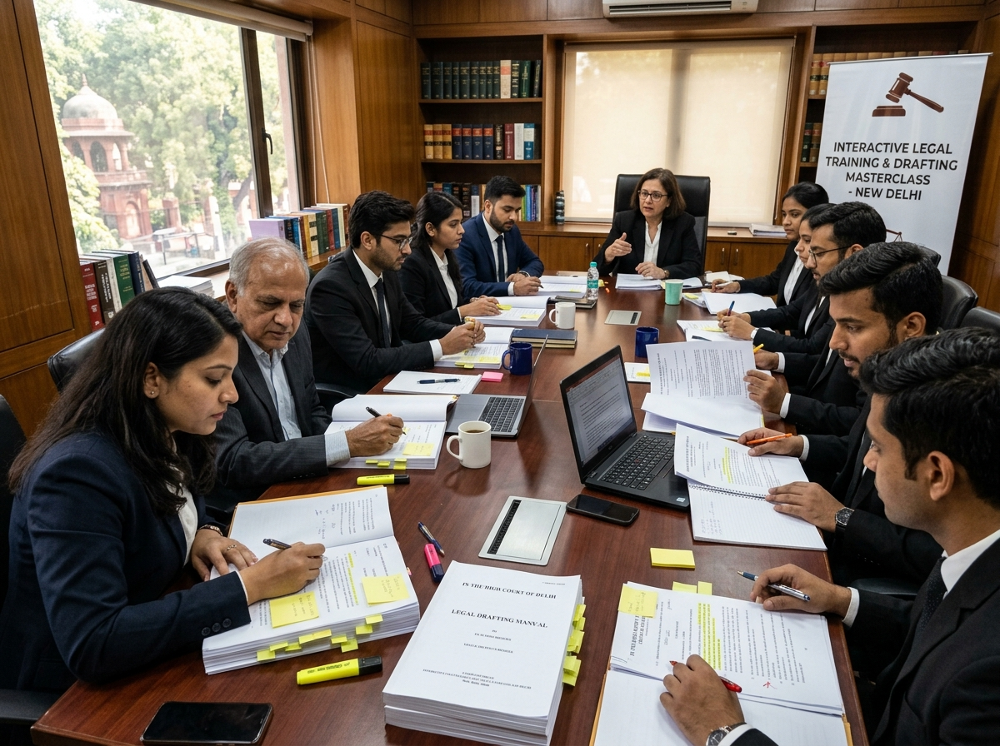
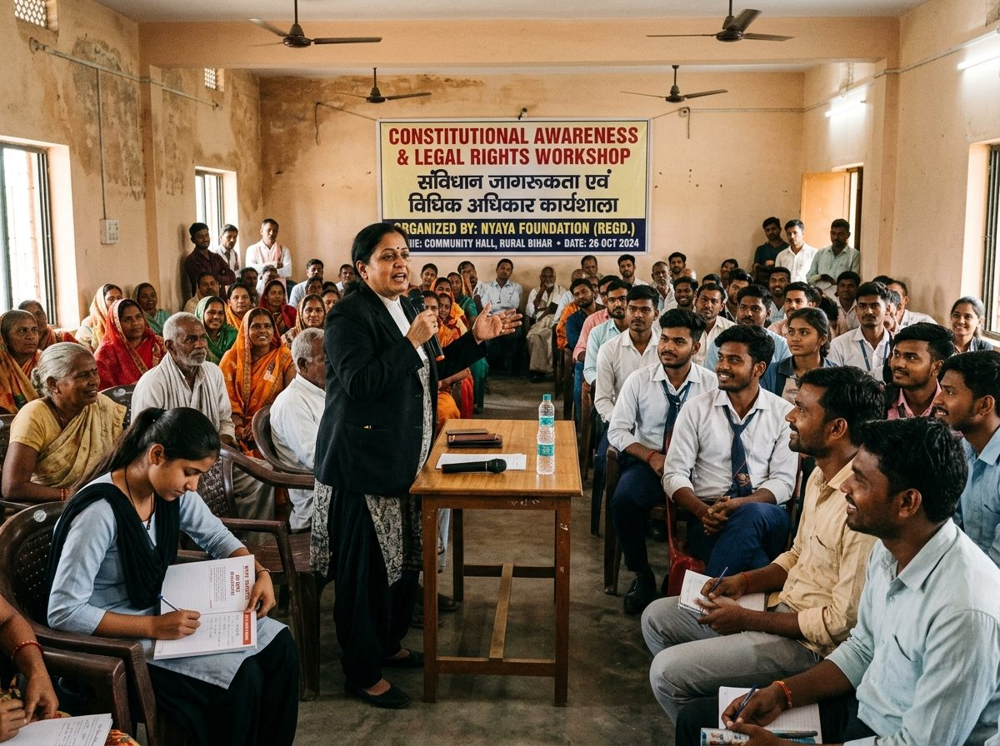

Legal Literacy
Pan-India Legal Literacy Drive
Interactive workshops empowering citizens and students with fundamental constitutional and statutory rights.
Safar Legal Trust is dedicated to creating awareness, opportunity, and structured mentorship for law students, young advocates, and communities across India.
Safar Legal Trust is a legal and social organisation dedicated to creating awareness, opportunity, and support for law students, young legal professionals, and communities across India. Founded by Adv. Paramhansh Upadhyay, the Trust serves as a crucible where theoretical jurisprudence transforms into practical advocacy.
Through structured mentorship, chamber labs, and direct courtroom observation, the Trust provides aspiring legal minds with the ethical foundation and procedural competence required to serve the justice delivery system with confidence.
The guiding principles that shape the vision and initiatives of Safar Legal Trust.
Promoting constitutional literacy, rigorous legal research, and making legal awareness accessible to citizens across all levels of society.
Ensuring ethical, accessible legal support and advocating for the vulnerable through robust courtroom representation.
Bridging the gap between theory and practice through structured mentorship, chamber exposure, and trial advocacy internships.
Empowering communities through legal aid clinics, grassroots workshops, and driving meaningful change in the justice system.
Core focus areas of Safar Legal Trust — from mentorship and legal aid to community outreach and digital awareness.
Structured guidance, court observation, research internships, and moot court training designed to prepare young legal aspirants for successful careers.
Grassroots workshops educating citizens on fundamental rights, consumer protections, cyber law basics, and everyday legal remedies.
Connecting underprivileged citizens and vulnerable families with reliable, compassionate advice and institutional legal aid pathways.
A collaborative peer forum fostering knowledge-exchange, research roundtables, professional ethics, and leadership in litigation.
Publishing accessible legal briefs, comparative insights, and actionable policy whitepapers to support law reforms and social justice.
Creating engaging video tutorials, explanatory legal guides, and social media campaigns to make the law accessible to every household.
Adv. Paramhansh Upadhyay is the Founder of Safar Legal Trust, an organisation committed to promoting legal awareness, education, justice, and social empowerment. Through the Trust, he aims to create meaningful opportunities for law students, young advocates, and communities to understand their rights and responsibilities.
His vision is to build a strong network of legal minds that can contribute towards a more informed, accessible, and responsible society. With a focus on knowledge, advocacy, and community development, Adv. Paramhansh Upadhyay seeks to bridge the gap between law and society.
Founder of Safar Legal Trust, leading the vision to bridge law and society through education, legal awareness, and youth empowerment.
Perspectives, commentary, and field notes from Safar Legal Trust on constitutional rights, advocacy, and community legal literacy.
Interactive workshops empowering citizens and students with fundamental constitutional and statutory rights.
Mentoring law graduates in trial advocacy, procedural drafting, and ethical litigation practice.
Assisting underprivileged families in accessing legal aid and understanding administrative dispute mechanisms.
Documentary glimpses of practical chamber research, drafting masterclasses, and community literacy camps.


Reflections from law students, young advocates, and community leaders who have experienced the Trust's guidance.
“Safar Legal Trust provided the exact mentorship and clarity I needed as a first-generation law student. Adv. Paramhansh Upadhyay’s guidance on courtroom drafting transformed my outlook.”
Safar Legal Trust admits students and young advocates on a cohort basis to ensure rigorous faculty attention and practical exposure. We welcome aspiring legal professionals committed to professional excellence and ethical advocacy.
For non-student legal inquiries or organizational collaborations, you may also use this application channel or reach our administrative office directly.
Please provide your academic background and areas of interest.
Common questions about Safar Legal Trust, its programs, and how to participate.
Safar Legal Trust is an Indian legal and social trust founded by Adv. Paramhansh Upadhyay. It promotes legal education, mentorship for law students and young advocates, constitutional literacy, and community legal awareness across India. The Trust is built on four core pillars: Knowledge, Justice, Opportunity, and Social Impact.
Safar Legal Trust was founded by Adv. Paramhansh Upadhyay, a practicing advocate based in New Delhi. The Trust's mission is to build a stronger and more inclusive legal community where knowledge of law becomes a tool for empowerment and positive social change — bridging the gap between legal theory and the realities faced by law students, young advocates, and communities.
Programs are open to enrolled law students (3-year or 5-year LL.B.), recent law graduates, junior advocates, and community members seeking legal awareness. Admission is based on merit and commitment to the legal profession. No arbitrary fees are charged.
Reach the Trust by email at contact@safarlegaltrust.org, or use the application form on this page. Office hours are Monday to Saturday, 10:00 AM to 7:00 PM IST. The Trust office is located in New Delhi, India.
Connect with Safar Legal Trust for inquiries, admissions, and institutional collaborations.